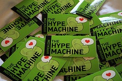

Our geeks are geekier than your geeks!
One of the new attendees at this year ISMIR (the Music Information Retrieval conference) was Anthony Volodkin, the founder of the music discovery site The Hype Machine. Anthony is part of the web 2.0 startup culture so he certainly knows about geeks. Here are some of Anthony's tweets during the conference:
- Haven't been so repeatedly and consistently outgeeked this way in a long time, ISMIR rocks! 06:17 PM September 15, 2008
- ISMIR's geeks outgeek Web 2.0 NY geeks by a massive margin 02:21 PM September 15, 2008
- ISMIR 2008 is hardcore-geeky, I love it! First talk is on relationship of geometry and musical consonance... !!! 06:16 AM September 15, 2008